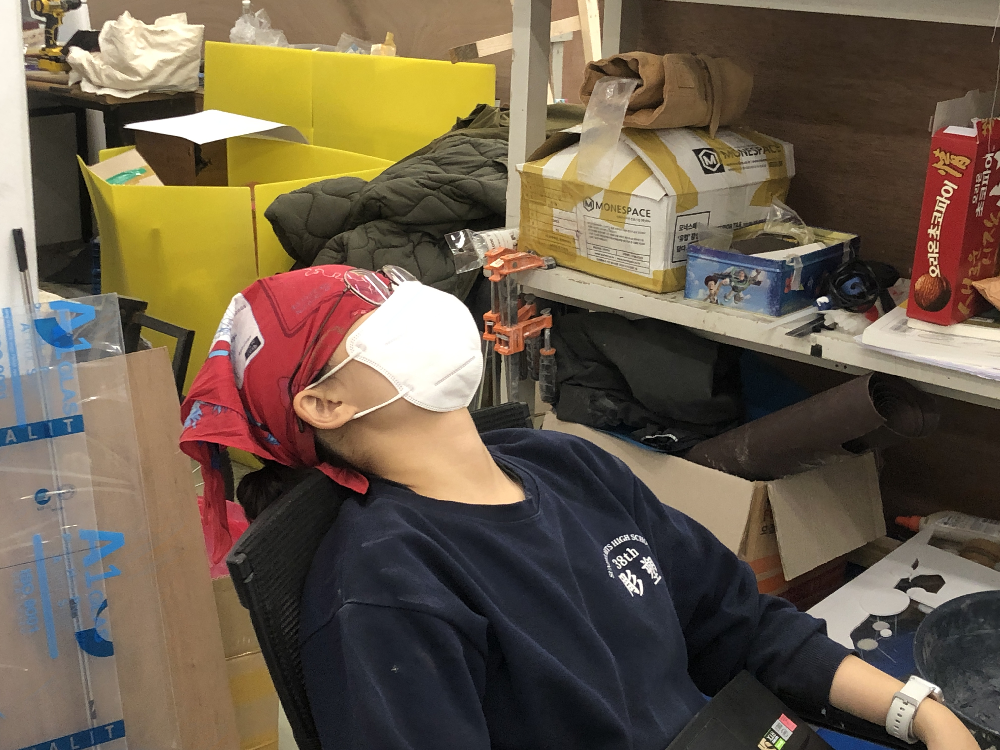

2022
2022년 연선탄
하이 연선 생일축하해.
지금은 1월 12일, 어제도 봤는데 오늘도 보고. 생일 당일에만 안 보는구나.
필통은 5번으로 했어. 원래 3번 살려고 했는데 품절이래;; 필통 주제에.
글서 그냥 젤 귀여운 걸로 샀음. 선물은 배송 오면 짠 하고 줄게.
너랑 올해 졸전을 겪으며 많이 친해진 것 같구나.
게임 만들면서 우리 둘의 나태지옥 같았지만 즐거웠어.
중간에 그만둘까 했을 때 사귀는 사인데 권태기 푸는 대화하는 것 같아서 웃겼음.
그때는 진심이었지만.
야 할튼 생축하고 남1 남2 남3 중 잘 골라서 사귀도록 해.
이상한 놈은 거르고. 되면 관음도 좀 시켜주고.
"얘기 많이 들었어요" 이 대사 언제가 한 번 쳐보고 싶었음.
사진은 내가 제일 좋아하는 너 사진이야.
그럼 2만~
